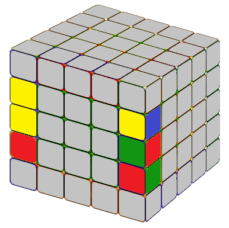
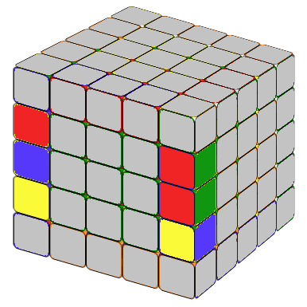
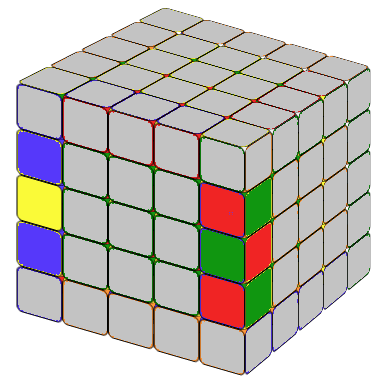
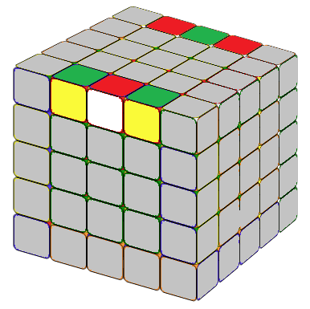
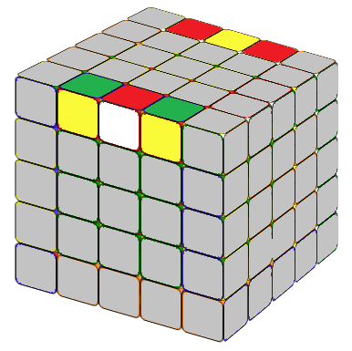
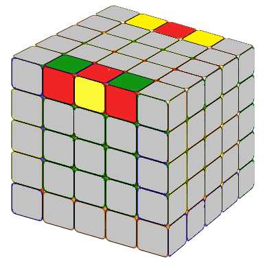
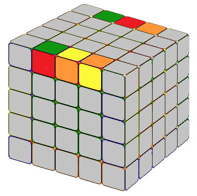
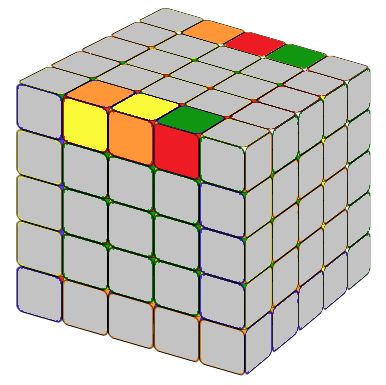

A 5x5 rubik's cube is also called professor's cube. So if you can solve a 5x5 rubik's cube, you are a professor! So it must be
very difficult. Actually it's not. We solve a 5x5 cube by reducing it to a 3x3 cube. After you reduce it to a 3x3 cube, you solve
it just like a 3x3 without any special cases. Some people think it's even easier than a 4x4.
STEP 1: Fix The Center 3x3 Blocks.
The first step is to fix the six 3x3 center blocks. For 4x4 cubes, the centers are not fixed, so we need to pay special
attention to the orientation of the center blocks. In a 5x5, just like a 3x3, all center pieces are fixed.
We can solve the center block by following the following steps:
(1) fix a 1x2 block;
(2) Add another 1x2 block and we get a 2x2 block;
(3) Add another 1x2 block we get a 2x3 block;
(4) Add a 1x3 block we get the 3x3 center block.
The method is similar to the one in the 4x4 cube. Just remember that whenever we move a block to some position, if this movement damages the
solved center block, we need to reverse the movement later so it will fix the damaged center block. Also, as we need to reverse the
movement later, we need to move the newly solved block away so this reverse movement will not damage our newly solved blcok.
It takes time, but the principal is simple.
STEP 2: Combining The Edges.
After we solve the center 3x3 blocks, we need to combine all the edges. Using the same method
we learned in the 4x4 cube, we combine two cubies to a 1x2 edge block first,
then treat this 1x2 block as one block, we combine it to the third
matching color cubie to a 1x3 edge block. We do that to all the edges.
In the end, you may encounter a situation which is not like a 4x4
cube, then we could check out the formulas below.
You do not have to remember all the formulas, just your favorites, then try
to maneuver the cube (you could also break an already solved 1x3 block)
so it is in a situation you knew how to solve.
(l'U2) (l'U2) (F2 l' F2) (rU2) (r'U2) l2
The image here shows two edges of red-green cubies and yellow-blue cubies.
The back colors are hidden. They are: yellow, yellow, and green.
Remember that we need to put the 1x2 block on the left side of the 1x1 block.
Here the "2" means a solved 1x2 block.
2.2 One 2+1 (on the left)

d R U R' F R'F' R d'
The image here shows two edges of red-green cubies and yellow-blue cubies.
The left layer colors are hidden. They should be blue, blue, and green. Notice that here the
1x2 solved block is on the left side and is on top of the 1x1 block.
2.3 One 2+1 (on the right)

d'y' R U R' F R' F' R d
The image here shows two edges of red-green cubies and yellow-blue cubies.
The left layer colors are hidden. They are green, yellow, and blue. Notice that here the
1x2 block is on the right side and 1x2 block is on top of the 1x1 block.
2.4 Two Separate Unsolved Edges

d u' R F' U R' F d' u
The image here shows two edges of red-green cubies and yellow-blue cubies. Notice that in this
situation, all the cubies needed to make one solved edge are on the same column.
The left layer colors are hidden. They are yellow, blue, and yellow.
2.5 Two Triangles

r2 F2 U2 r2 U2 F2 r2
The image here shows two edges of red-white cubies and yellow-green cubies.
The back layer colors are hidden. They are white, yellow, and white. In this image
on the up layer, you can see two triangles: a red triangle and a green triangle.
2.6 One Triangle

r2 B2 r' U2 r' U2 B2 r' B2 r B2 r' B2 r2
The image here shows two edges of red-white cubies and yellow-blue cubies.
The back layer colors are hidden. They are white, green, and white. This image is similar
to case 2.5 except that you can only see one red triangle on the up layer.
2.7 One Between Two

F2 r D2 r' F2 U2 F2 l B2 l'
The image here shows two edges of red-green cubies and red-yellow cubies.
The back layer colors are hidden. They are red, green, and red. Notice that here for
each unsolved edge, there is cubie that is out of place between the two matching color cubies.
2.8 Two 2(unsolved) + 1

l U2 l2 U2 l' U2 l U2 l' U2 l2 U2 l
The image here shows two edges of red-green cubies and yellow-orange cubies.
The back layer colors are hidden. They are red, green, and yellow. Notice the "2" is an unsolved 1x2 block.
On the front side the unsolved 1x2 block is on the right of the 1x1 block.
On the back layer, the situation is the opposite.
2.9 Two 2(unsolved) + 1

r' U2 r2 U2 r U2 r' U2 r U2 r2 U2 r'
The image here shows two edges of red-green cubies and yellow-orange cubies.
The back layer colors are hidden. They are yellow, green, and red. Notice the "2" is an unsolved 1x2 block.
On the front side, the unsolved 1x2 block is on the left of the 1x1 block.
On the back layer, the situation is the opposite.
To make it easy, I put all of the formulas together.
2.10 Edge Combining Formulas
r2B2U2 lU2 r'U2rU2 F2rF2 l'B2r2 l'U2l'U2 F2l'F2 rU2r'U2 l2 d R U R' F R'F' R d' d'y' R U R' F R' F' R d du' RF'UR'F d'u
r2 F2 U2 r2 U2 F2 r2 r2 B2 r' U2 r' U2 B2 r' B2 r B2 r' B2 r2 F2 r D2 r' F2 U2 F2 l B2 l' l U2 l2 U2 l' U2 l U2 l' U2 l2 U2 l r' U2 r2 U2 r U2 r' U2 r U2 r2 U2 r'
STEP 3: SOLVE THE 5x5 CUBE AS IT IS A 3x3 CUBE
Now we have the 5x5 cube with solved centers (3x3 blocks) and edges (1x3 blocks). We can solve it just like a 3x3 cube.
Unlike a 4x4 cube, there are no special situations. It's done!
 A 5x5 rubik's cube is also called professor's cube. So if you can solve a 5x5 rubik's cube, you are a professor! So it must be
very difficult. Actually it's not. We solve a 5x5 cube by reducing it to a 3x3 cube. After you reduce it to a 3x3 cube, you solve
it just like a 3x3 without any special cases. Some people think it's even easier than a 4x4.
A 5x5 rubik's cube is also called professor's cube. So if you can solve a 5x5 rubik's cube, you are a professor! So it must be
very difficult. Actually it's not. We solve a 5x5 cube by reducing it to a 3x3 cube. After you reduce it to a 3x3 cube, you solve
it just like a 3x3 without any special cases. Some people think it's even easier than a 4x4.  The first step is to fix the six 3x3 center blocks. For 4x4 cubes, the centers are not fixed, so we need to pay special
attention to the orientation of the center blocks. In a 5x5, just like a 3x3, all center pieces are fixed.
We can solve the center block by following the following steps:
The first step is to fix the six 3x3 center blocks. For 4x4 cubes, the centers are not fixed, so we need to pay special
attention to the orientation of the center blocks. In a 5x5, just like a 3x3, all center pieces are fixed.
We can solve the center block by following the following steps:  (r2B2U2) (lU2) (r'U2) (rU2) (F2rF2) (l'B2) r2
(r2B2U2) (lU2) (r'U2) (rU2) (F2rF2) (l'B2) r2